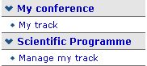

| Prev | Next | |
As a Track Co-ordinator you are able to propse the acceptance or rejection of abstracts within your track. Your are given the track co-ordinators access by the Conference Manager.

You can access your tracks by selecting 'my tracks' or 'manage my tracks' from the left hand menu under my conference or scientific timetable , this will take you to the list of tracks you are co-ordinating or straight into your track if you co-ordinate one track.